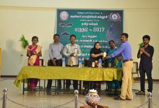
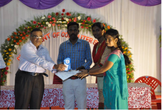
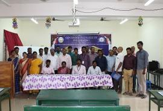
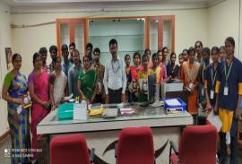
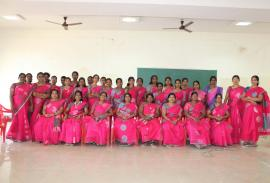
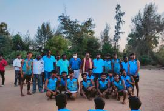
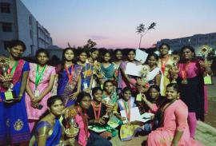

ABOUT OUR COLLAGE
• Government Engineering College (GCE), Thanjavur is a government
engineering college in Thanjavur, Tamilnadu, India. It was
established in 2013 and offers various courses in UG
in Engineering and it is accredited from UGC and it is affiliated to
Anna University.
• GCE THANJAVUR is an college of national importance nurturing
innovation and excellence amongst the student community to
develop researches and leaders and empower the country with their
contributions in various disciplines in the future.
• The institute offers undergraduate courses leading to the degree
of Bachelor of Engineering. The Undergraduate students are
admitted through Anna university counselling based on competitive
student rankings in higher secondary examination.
• It is located 25 km from the city of Thanjavur and 40 km from the
city of Trichy on Sengipatti - Gandharvakottai Main road.
• Government has allotted fund for laboratories, machineries and
equipment's are purchased regularly. Government scholarships are
dispersed to the students properly.
• We thank our CM for establishing this college for the welfare of the
student’s society
OUR PRINCIPAL

Dr.M.Natraj
FACILITIES
GALLARY








GET DIRECTION
CONTACT US
Government College of Engineering-Thanjavur
Thanjavur,
Tamil Nadu - 613 402
Phone - 04362 221112, 221113
Fax - 04362 221112
E-mail : gcesengipatti@gmail.com